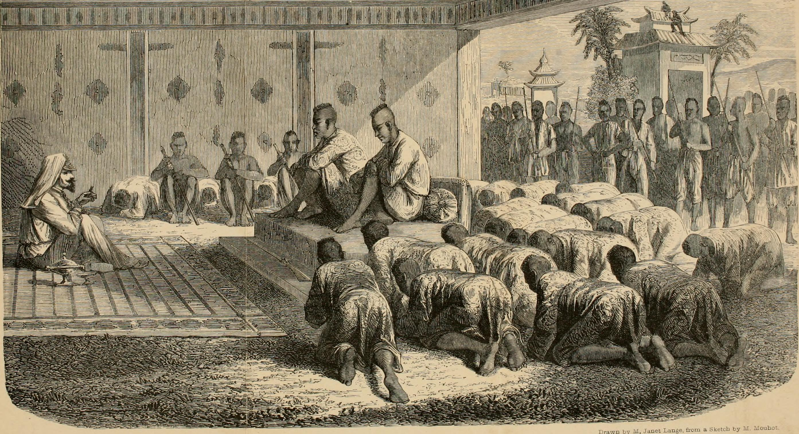

Henri Mouhot
Life and Adventures in the remote lands of Siam, Lao, and Cambodia.
Early Life
Alexandre Henri Mouhot was born on 15 May 1826, in the French village of Montbeliard, near the Swiss border.
Henri was a Greek scholar and studied philology with the intention of teaching but he also developed interests in the natural sciences and foreign travel at an early age. Mouhot went to Russia as a young professor of philology in the 1850s and traveled throughout Europe with his brother Charles, studying photographic techniques developed by Louis Daguerre.
The two brothers moved to England in 1856 where Henri devoted himself to zoological studies. Both brothers married descendants of Mungo Park, the famous Scottish explorer of Africa. Henri married Annette, who was probably the granddaughter of Mungo Park. The two families settled on the island of Jersey in the English Channel where Henri refined his study of the natural sciences, specialising in ornithology and conchology, and renewed his interest in foreign travel. British academic societies proved sympathetic to Mouhot’s interest in natural history and foreign travel, and he received support from the Royal Geographical Society and the Zoological Society of London for a zoological mission to Indochina in 1858.
Siam: The Adventure Begins
On 27 April 1858 Henri Mouhot and his King Charles dog, Tine-Tine, sailed from London for Bangkok via Singapore, a journey that took four months. Soon after arriving, he met Bishop Pallegoix who put him in touch with other French Catholic missionaries serving at interior posts.
He arrived in Siam in July, 1858. From his base in Bangkok, located in the center of Siam, Mouhot made four journeys into the interior of Siam, Cambodia, and Laos.
Mouhot’s first expedition began on October 19th. After being introduced into the Western society in Bangkok and an invitation from king Mongkut of Siam, Mouhot began a boat trip up the Chao Phraya River to visit the ruins of Siam's former and legendary capital Ayutthaya. Ayutthaya was an easy starter for travelling inner Indochina, because it is close to Bangkok and was already known by Westerners.
Siam to Cambodia
After returning to Bangkok from Ayutthaya, Mouhout left for Chanthaburi, which he explored with his characteristic vigor before, in the spring of 1859, Mouhot left Chanthaburi in a fishing boat and followed the coastline along the Gulf of Siam to Kampot.
The First King of Cambodia (Ang Duang, reigned 1848-1860) was in residence and granted an audience to Mouhot, who presented the king with an English 'walking-stick gun.' The king reciprocated by giving Mouhot permission to travel to the capital of Udong, an eight-day journey to the north-east by oxen. There Mouhot met the Second King of Cambodia (Norodom, reigned 1860-1904) who provided him with wagons and elephants to continue north to the village of Pinhalu where he visited the Stiens, a tribe occupying an area east of the Mekong.
After travelling around the interior of the Cambodian kingdom, cataloguing new plant and animal specimens and documenting the lifestyles of different Cambodian tribes, Mouhot set off on what would become his most famous expedition - a journey to Angkor Wat.
Mouhout's First Encounter with Angkor Wat
Although making no pretension whatever either to architectural or archaeological acquirements, I will endeavour to describe what I saw, for the benefit of others interested in these sciences, and, as well as I can, to draw the attention of Eastern savans to a new scene. I shall commence with the temple of Ongcor, the most beautiful and best preserved of all the remains, and which is also the first which presents itself to the eye of the traveller, making him forget all the fatigues of the journey, filling him with admiration and delight, such as would be experienced on finding a verdant oasis in the sandy desert. Suddenly, and as if by enchantment, he seems to be transported from barbarism to civilisation, from profound darkness to light.
“...in the ancient kingdom of Tsiampois (Cochin-China), ruins of such grandeur, remains of structures which must have been raised at such an immense cost of labour, that, at the first view, one is filled with profound admiration, and cannot but ask what has become of this powerful race, so civilised, so enlightened, the authors of these gigantic works?”
“One of these temples—a rival to that of Solomon, and erected by some ancient Michael Angelo—might take an honourable place beside our most beautiful buildings. It is grander than anything left to us by Greece or Rome, and presents a sad contrast to the state of barbarism in which the nation is now plunged. Unluckily the scourge of war, aided by time, the great destroyer, who respects nothing, and perhaps also by earthquakes, has fallen heavily on the greater part of the other monuments; and the work of destruction and decay continues among those which still remain standing, imposing and majestic, amidst the masses of ruins all around.”
“One seeks in vain for any historical souvenirs of the many kings who must have succeeded one another on the throne of the powerful empire of Maha-Nocor-Khmer. There exists a tradition of a leprous king, to whom is attributed the commencement of the great temple, but all else is totally forgotten. The inscriptions, with which some of the columns are covered, are illegible; and, if you interrogate the Cambodians as to the founders of Ongcor-Wat, you invariably receive one of these four replies: “It is the work of Pra-Eun, the king of the angels;” “It is the work of the giants;” “It was built by the leprous king;” or else, “It made itself.” The work of giants! The expression would be very just, if used figuratively, in speaking of these prodigious works, of which no one who has not seen them can form any adequate idea; and in the construction of which patience, strength, and genius appear to have done their utmost in order to leave to future generations proofs of their power and civilisation.”
Cambodia to Lao: Home of the Lan Sang Kingdom
In the summer of 1860, Mouhot set out on another pioneering journey, this time to north-eastern Siam -Isaan - and Laos, as far north as Luang Prabang. Before his departure, Siamese in Bangkok told Mouhot that they knew of only one other foreigner in the past twenty-five years, a French priest, who had penetrated the heart of Laos and returned safely. Mouhot, though, believed it was his destiny to make the trip. First he went north to Ayutthaya, then to Korat where he visited a Khmer temple, Prasat Phnom Wan, and on to Chaiyapoon, where his trip was aborted by an official who refused to help him obtain oxen or elephants for his journey. So he returned to Bangkok for additional credentials and then continued to Laos.
He reached Luang Prabang on 25 July 1861. The mountains which, above and below this town, enclose the Mekong, form here a kind of circular valley or amphitheatre, nine miles in diameter, and which, there can be no doubt, was anciently a lake. It was a charming picture, reminding one of the beautiful lakes of Como and Geneva. “Were it not for the constant blaze of a tropical sun, or if the midday heat were tempered by a gentle breeze, the place would be a little paradise.” wrote Mouhout.
Mouhot's Last Adventure: Death and Legacy
He planned to spend the remainder of the year in the environs of Luang Prabang, then go to the Laotian tribes to the east in early 1862, and in July or August, to go down the Mekong to Cambodia. His plans, though, were aborted when on 19 October, 1861, Mouhot was attacked by a fever. His notes leave little doubt that he himself thought he was near death. “If I must die here, where so many other wanderers have left their bones, I shall be ready when my hour comes.”Ten days later he made his last entry in his diary,'- Have pity on me, oh my God....!” Henri Mouhot died on the evening of 10 November 1861.
Phrai and Deng, Mouhot's faithful servants, buried him on the bank of Nam Kan River, east of Luang Prabang, at the spot where he died. Then they carried his notes and specimens to Bangkok where they transferred the items to the French Consul who forwarded them to Mouhot's wife and brother. The family later gave them to the Royal Geographical Society in London, where his hand-written notes are accessible in the archives today.
Six years after Mouhot's death, the French Mekong Exploration Commission set out to find a navigable route, from Saigon into China, that could be used for trade along the Mekong River. The expedition, led by Commander Ernest-Marc-Louis de Gonzague Doudart de Lagree, a 42-year-old naval officer, used the map drawn by Mouhot for travelling overland in Laos. As his map was the only existing one at that time, credit is given to Mouhot for having produced the first map of the route from Bangkok to Luang Prabang. The Admiral in charge of the expedition, de la Grandiere, believed that France owed “recognition and regret to the hardy explorer to whom she had granted neither help nor encouragement when they could have been of use.” He, therefore, requested that the Doudart de Lagree expedition try to put up a monument in Mouhot's memory near the site where he died.
On 29 April 1867, the commission reached Luang Prabang. Soon after arriving, Commander Doudart de Lagree asked the ruler of Laos for permission to construct a monument over Henri Mouhot's grave. The ruler readily agreed and offered to provide the necessary materials. Louis Delaporte, a member of the commission, made drawings and supervised the building of the monument. It was placed on the spot where Mouhot was buried, high on the bank of the Nam Kan River. A simple plaque inscribed “H. Mouhot, May 1867” was attached to the monument. The date of 1867 refers to the year the French commission erected the tombstone. The monument was destroyed by the overflow of the river Nam Khan. It was replaced in 1887 by a more durable crypt monument, and a maisonnette was built nearby to house and feed visitors to the white shrine. Some restoration work was done on the tomb in 1951 by the EFEO (Ecole Française d'Extrème Orient—The French School of the Far East).
Mouhot's tomb was consumed by the jungle and lost until it was accidentally rediscovered in 1989 by a French Laos scholar, Jean-Michel Strobino, who played a part in rehabilitating it with the support of the French embassy and the Municipality of Montbeliard, Mouhot's birth town. A new plaque was fixed to one end of the crypt in 1990 to commemorate this rediscovery. The location is now known to hotels and tourist operators in Luang Prabang, and a minivan or "tuk tuk" may be hired to take one the 10 km from town to visit it.